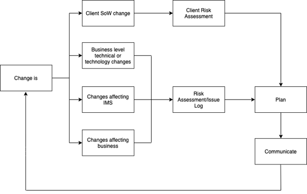
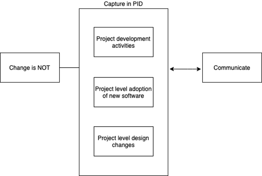

Handbook
Change Management Terms of Reference (TORs)
Scope
The purpose of this document is to define the methods for managing changes to processes and other aspects of the Integrated Management System (IMS) in a controlled manager so as to maintain the integrity of the IMS, assign responsibility and assess the potential impacts of change.
Types of Change
The following diagram shows the different types of change with in the organisation and how it is managed.

Non-Change Activities
Certain activities are not considered as “change” within the organisation. These are often business as usual activities within the project, and are managed within the project PID.
